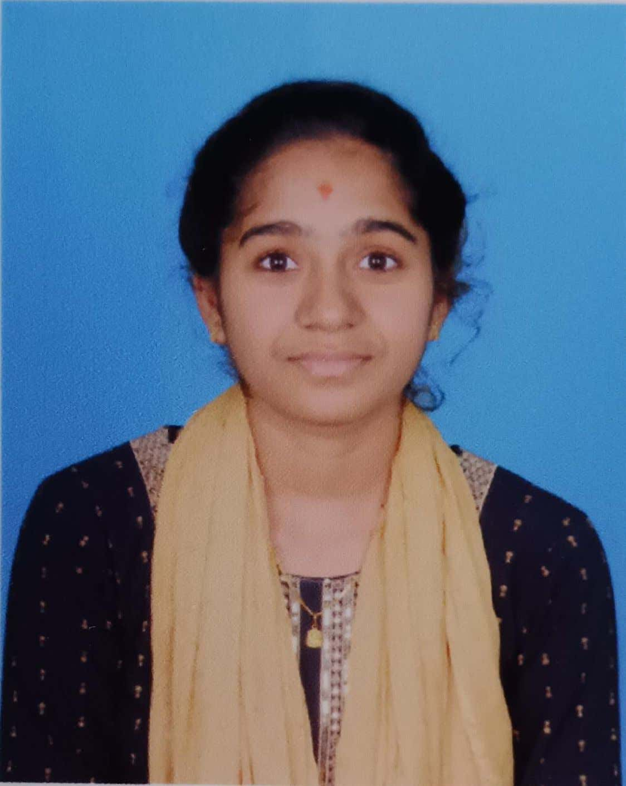

Python | Salesforce CRM | Data Analytics | Cloud Technologies
Building practical projects and exploring new technologies.
I am a final-year Computer Science Engineering student interested in Python, Salesforce, Data Analytics, and Cloud Technologies. I enjoy building practical projects and learning new technologies.
Computer Science Engineering
Aditya Institute of Technology and Management
2022 – 2026
CGPA: 9.03 / 10
Sri kumar Junior College
2020 – 2022
Percentage: 86%
Z P High School,Rangoi
2019 – 2020
Percentage: 97%
Amazon Web Services
May 2025 – Jul 2025
Python, C, C++
HTML, CSS, REST APIs
EC2, S3, Lambda, DynamoDB, CloudFormation, IAM, VPC, API Gateway, CloudWatch
Salesforce CRM, Lightning Web Components (LWC), Visualforce, Flows, Apex Basics
TensorFlow, Keras, CNN, MobileNetV2, NumPy, Pandas, Matplotlib, Scikit-learn
Kali Linux, Burp Suite, Wireshark, DeepSound, OWASP Top 10, PortSwigger
Git, GitHub, VS Code, MS Office, Linux CLI
Serverless Architecture, Data Structures & Algorithms
Note: Some technologies were explored through academic coursework, workshops, hackathons, and personal projects. My proficiency continues to grow through hands-on learning and real-world project development.
A deep learning project that detects and classifies brain hemorrhage from CT scan images using a CNN-based MobileNetV2 model optimized with Particle Swarm Optimization (PSO).
Technologies:
A cloud-based web application developed to provide an online platform for browsing and ordering homemade pickles and snacks, with cloud-based storage and order management.
Technologies:
Achieved Salesforce Trailhead Triple Star Ranger status with 12 Super Badges and36 Trails.
Level 1 & Level 2 — SUPRAJA Technologies
Volunteer — Aditya Institute of Technology and Management
Email: sowjanyadokkari@gmail.com
Location:Srikakulam, Andhra Pradesh
LinkedIn: View LinkedIn Profile